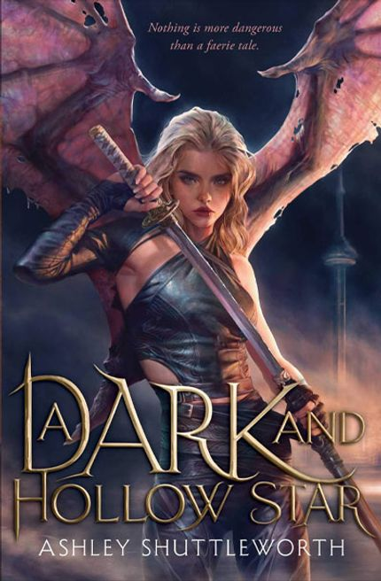
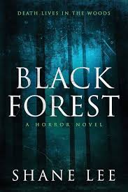

FICTION
Fiction books are primarily for entertainment, allowing readers to escape into
imaginative worlds, experience different perspectives, and empathize with fictional characters.
They can also serve as a means of relaxation and stress relief.

MYSTERY
Mystery and thriller books are known for their suspenseful plots, unexpected twists, and thrilling narratives.
They engage readers by challenging them to solve mysteries,
uncover secrets, and keep them on the edge of their seats until the very end.
FANTASY
Fantasy books transport readers to magical realms and mythical worlds, offering epic
adventures, fantastical creatures, and imaginative storytelling. They provide an escape from
reality and encourage readers to explore the limitless possibilities of the imagination.

SELF HELP
Self-help books provide practical advice, guidance, and strategies for personal growth
, self-improvement, and achieving success in various aspects of life. They empower
readers to overcome challenges, develop new skills, and live fulfilling lives.
HORROR
Horror books delve into the darker aspects of human nature, fear, and the supernatural.
They evoke feelings of suspense, terror, and unease, providing readers with adrenaline-pumping
thrills and spine-chilling experiences.
